Running a Simulation¶
Lets run a simple simulation of a radial fracture propagation. The first step towards running the simulation is to create a mesh describing our domain as a mesh.CartesianMesh object (see the class documentation for details). PyFrac uses a rectangular mesh to discretize the domain.
from mesh import CartesianMesh
Mesh = CartesianMesh(0.3, 0.3, 41, 41)
The above code will generate a rectangular mesh with 41 cells along both the x and y axes, having the dimensions of [x_min=-0.3, x_max=0.3, y_min=-0.3, y_max=0.3] meters. Next, we have to specify the parameters describing the material being fractured and the injected fluid. This is to be done by instantiating the properties classes. Below, we set up a material with the Poisson’s ratio of \(0.4\), the Young’s modulus of \(3.3\times10^{10}\,Pa\) and the fracture toughness of \(0.005\;Mpa\,\sqrt{m}\) by instantiating a properties.MaterialProperties object:
from properties import MaterialProperties
# solid properties
nu = 0.4 # Poisson's ratio
youngs_mod = 3.3e10 # Young's modulus
Eprime = youngs_mod / (1 - nu ** 2) # plain strain modulus
K_Ic = 5e3 # fracture toughness
Solid = MaterialProperties(Mesh, Eprime, K_Ic)
The fluid properties are to be set up with a properties.FluidProperties object. Below we set up a fluid with a viscosity of \(1.1\times 10^{-3}\;Pa\,s\):
from properties import FluidProperties
# fluid properties
Fluid = FluidProperties(viscosity=1.1e-3)
Next, we will set up injection parameters with the properties.InjectionProperties object. For this simulation, we set the injection rate to be \(0.001\;m^3/s\):
from properties import InjectionProperties
# injection parameters
Q0 = 0.001 # injection rate
Injection = InjectionProperties(Q0, Mesh)
Simulation parameters such as the end time, the times at which the solution is required to be evaluated, the output folder to write data and many others can be set up using properties.SimulationProperties object (See the class description for the available options). The parameters are read from a file at the time of instantiation. If no file is given, the default values are used. Below, we first instantiate the simulation parameters object with the default values and then set up the parameters that are required to be changed according to our simulation.
from properties import SimulationProperties
# simulation properties
simulProp = SimulationProperties()
simulProp.finalTime = 1 # the time at which the simulation stops
simulProp.set_simulation_name("radial") # name the simulation "radial"
After setting up of the properties, let us set up the initial state of the fracture that is to be propagated. It is done by creating a fracture.Fracture object. For this simulation, we set the viscosity dominated analytical solution as the initial state of the fracture. This is done by first creating a fracture_initialization.Geometry class object and setting up our initial shape as ‘radial’ and providing the initial radius. After that, we instantiate a fracture_initialization.InitializationParameters class object and set the regime in which our initial fracture is propagating as “M” (specifying the viscosity dominated regime). This object along with the properties objects that we had instantiated before are passed to the constructor of the Fracture class. For a complete list of options and the ways a fracture can be initialized, see the documentation of the fracture_initialization.InitializationParameters class. For this simulation, we start with a fracture with a radius of \(0.1\,m\).
from fracture import Fracture
from fracture_initialization import Geometry, InitializationParameters
# initialization parameters
Fr_geometry = Geometry('radial', radius=0.15)
init_param = InitializationParameters(Fr_geometry, regime='M')
# creating fracture object
Fr = Fracture(Mesh,
init_param,
Solid,
Fluid,
Injection,
simulProp)
After specifying all the properties and initializing the fracture, we will set up a controller and run the simulation.
from controller import Controller
# create a Controller
controller = Controller(Fr,
Solid,
Fluid,
Injection,
simulProp)
# run the simulation
controller.run()
The controller.Controller.run() function will advance the simulation according to the parameters set in the simulation properties. The state of the fracture is stored in the form of the fracture object in the output folder set up in the simulation properties. A new folder with the name of the simulation and the time stamp at which the simulation was run is created for each of the simulation. If a folder or name is not provided, the simulation will be saved in the default folder (_simulation_data_PyFrac) with the default name (simulation). After the simulation is finished, the results can be post-processed and visualized using the provided visualization routines.
Meshing during simulations¶
PyFrac is based on a planar structured rectangular mesh created at the beginning of all simulations. In the beginning of this chapter you’ve seen how to generate a mesh centered on [0, 0]. It is, however, possible to generate a mesh centered around any point you wish by executing the following:
from mesh import CartesianMesh
Mesh = CartesianMesh(0.15, [-0.175, 0.05], 47, 71)
This will generate a mesh having dimensions of [x_min=-0.15, x_max=0.15, y_min=-0.175, y_max=0.05] meters. You can pass an array of two variables defining the limits of your mesh instead of a half length. Combinations of the two options are freely possible.
In a next step we need to decide on how the mesh should evolve during the simulation. The default settings are such that we double the height and breadth of our cells once the fracture reaches the boundary of our mesh. For this re-meshing, the number of cells remains the same, so a doubling of the height and breadth results in a doubling of the discretized domain size. For the mesh given above the dimensions after such a re-meshing would be [x_min=-0.30, x_max=0.30, y_min=-0.2875, y_max=0.1625]. If you want to coarsen your mesh by a smaller factor, the re-meshing factor can be adapted with:
from properties import SimulationProperties
simulProp = SimulationProperties()
simulProp.remeshFactor = 1.5
If you don’t want the fracture to extend out of the original mesh. You can simply block re-meshing completely. In this case the simulation will stop once you reach the boundary. This can be performed by setting:
simulProp.enableRemeshing = False
We will refer to this type of re-meshing hereafter as the “mesh compression”.
We implemented some additional features concerning the evolution of our discretized domain during the simulation. The first is called a “mesh extension”: This means that we add elements on the sides where the fracture is reaching the boundary of the domain. By default this feature is disabled to save memory and reduce computation time. It is, possible to allow the extension of the mesh in given directions. This can be achieved by the following command
simulProp.set_mesh_extension_direction(['top'])
The possible options are ‘top’, ‘bottom’, ‘left’, ‘right’ meaning respectively that the mesh is extended in direction of positive y, negative y, negative x, or positive x. Additionally, one can define an extension in ‘horizontal’, ‘vertical’ or ‘all’ directions. Any combination of two parameters is possible. For example the line of code
simulProp.set_mesh_extension_direction(['top', 'left'])
will allow the mesh to extend towards positive y and negative x. The mesh extension factor tells you by which factor the number of elements is multiplied when the boundary is reached.
simulProp.set_mesh_extension_factor(1.5)
The mesh extension factor can be chosen different for every direction. Passing a float (as in the example above) value will set it to the given value in all directions. Further options are the passing of a list with two entries (first gives the factor in direction x and second in direction y) or a list with four entries (respectively giving the factor in negative x, positive x, negative y and positive y). Two important notes on the mesh extension are to be made:
Whenever the fracture reaches a boundary where mesh extension has not been turned on, a re-meshing by compressing the domain (mesh compression) is performed.
Whenever the fracture reaches the boundary in all four directions simultaneously, a re-meshing by compression of the domain (mesh compression) is done.
The second point can be disabled by setting
simulProp.meshExtensionAllDir = True
In this case the fracture will add elements in the specified directions even if all four boundaries are reached simultaneously. Note that this option only makes sense if you’ve set
simulProp.set_mesh_extension_direction(['all'])
should you fail to set this option but set the flag PyFrac will automatically allow mesh extension in all directions.
For this last case the number of elements is growing rapidly and computational costs might explode. To counter this problem we implemented the possibility to reduce the number of cells. The limiting parameter on the computational cost is the number of elements inside the propagating fracture (respectively the maximum number inside a fracture footprint for several fractures). By default we set the number of elements allowed inside a fracture to infinity such that no mesh reduction is performed. As not to coarsen the mesh to much, the user can set a maximum cell breadth (max hx). The initial aspect ratio of the cells is conserved such that a maximum breadth equivalently fixes a maximum cell height. If a mesh reduction would lead to a coarsening with cell height or breadth bigger than the defined maximum, we disable mesh reduction from this point on. The following code allows to set the reduction factor (factor by which the number of cells in x (nx) and y (ny) will be divided) to 1.5, the maximum number of cells inside the fracture to 1000, and the maximum breadth of the cell to 50 [m].
simulProp.meshReductionFactor = 1.5
simulProp.maxElementIn = 1000
simulProp.maxCellSize = 50
Examples of different mesh extensions¶
We illustrate the different re-meshing options by several examples as to familiarize the user with the different options. Our first example has its focus on a propagating dike. The following initial mesh and re-meshing properties are specified:
from mesh import CartesianMesh
from properties import SimulationProperties
# creating mesh
Mesh = CartesianMesh(0.01, 0.01, 31, 31)
# define the re-meshing parameters
simulProp.set_mesh_extension_factor(1.5)
simulProp.set_mesh_extension_direction(['top', 'horizontal'])
In words, we start a simulation where we allow the fracture to extend in horizontal (positive and negative x direction) as well as to the top (in positive y direction). The mesh extension factor is set to 1.5 in all directions and the re-meshing factor for mesh compression remains at its default value of 2.
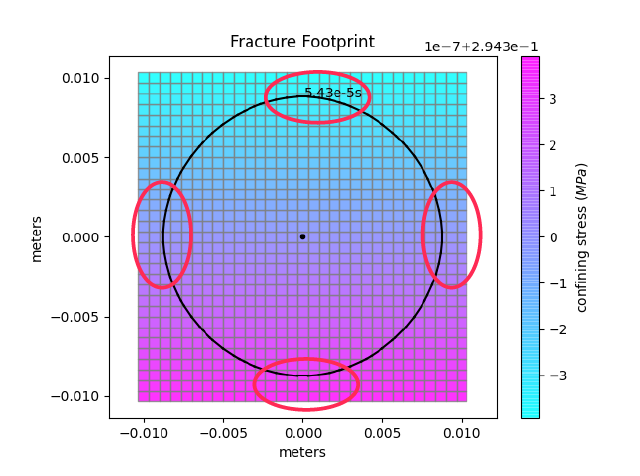 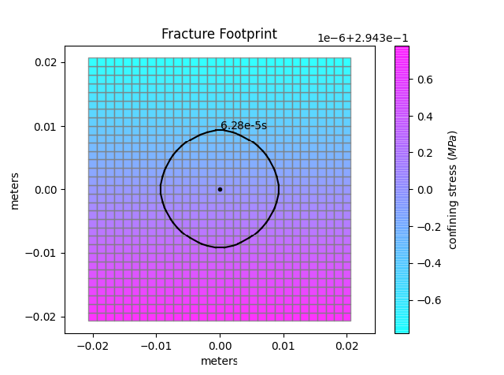{kind=link}
{kind=link}
From the left picture we see that in the next time step all four boundaries will be reached (note that we re-mesh when the front enters the cell just inside of the boundary layer). As this activates the condition of four boundaries reached at the same moment the domain will be compressed. You can see the result on the right picture. The number of elements remains the same (31x31), whereas the surface covered has doubled in breadth and height [-0.02, 0.02, -0.02, 0.02].
To achieve the next configuration we skipped a extension of the mesh in positive y direction. After this extension, the mesh has the following dimensions: nx = 31, ny = 47, with dimensions [xmin = -0.02, xmax = 0.02, ymin = -0.02, ymax = 0.04]. We show now that the fracture reaches the boundary at three locations, in negative and positive x direction and on the bottom (negative y). This has the following consequences: The horizontal extension will take place in both directions. As there is a boundary reached where no extension is enabled (negative y) the entire new domain will then be compressed (see point 1 on mesh extension). The dimensions after re-meshing (see right picture) are: nx = 63, ny = 47, [xmin = -0.08, xmax = 0.08, ymin = -0.05, ymax = 0.07].
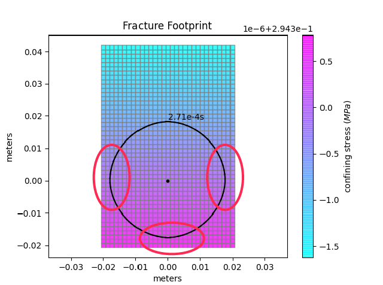 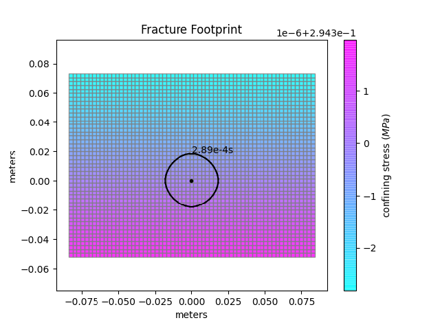{kind=link}
{kind=link}
The next re-meshing in this situation is because the fracture reaches the lower boundary. As this boundary is not allowed to perform mesh extension a simple mesh compression like in the first example is performed (see again point 1 on mesh extension). Figures before and after this compression are shown hereafter. The new dimensions are: nx = 63, ny = 47, [xmin = -0.16, xmax = 0.16, ymin = -0.11, ymax = 0.13].
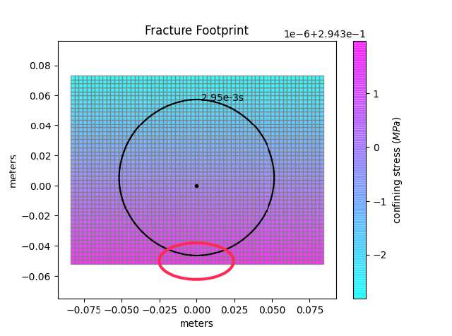 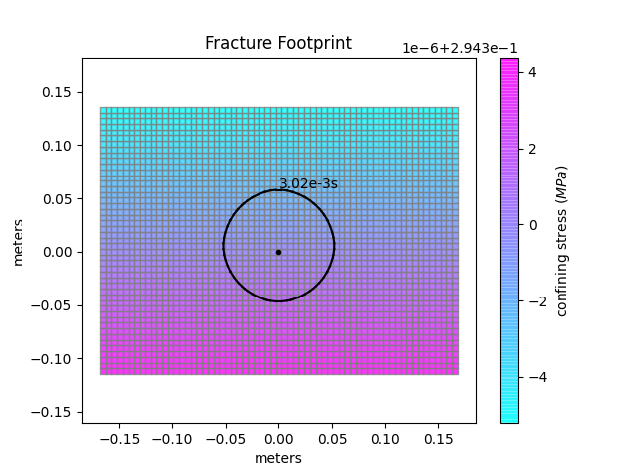{kind=link}
{kind=link}
Finally, the fracture starts growing vertically and only reaches the upper boundary. As there mesh extension is allowed, we will simply add elements on the positive y-direction and the new mesh is given by: nx = 63, ny = 71, [xmin = -0.16, xmax = 0.16, ymin = -0.11, ymax = 0.25].
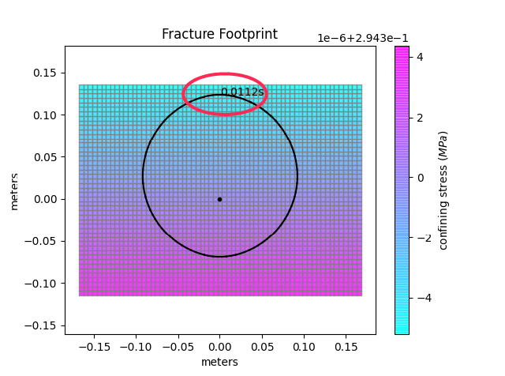 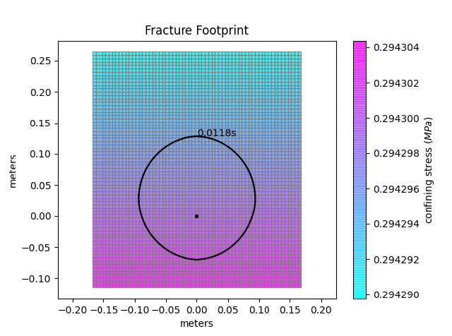{kind=link}
{kind=link}
This first example mainly shows the capabilities of the mesh extension and mesh compression re-meshing properties.
We switch now to a second example where we want to highlight how the mesh reduction works. For this second example we initiate the problem with the following re-meshing properties:
from mesh import CartesianMesh
from properties import SimulationProperties
# creating mesh
Mesh = CartesianMesh(0.3, 0.3, 21, 21)
# define the re-meshing parameters
simulProp.meshExtensionAllDir = True
simulProp.set_mesh_extension_direction(['all'])
simulProp.set_mesh_extension_factor(1.15)
simulProp.maxElementIn = 750
simulProp.maxCellSize = 50
In words, we start a simulation where we allow the fracture to extend in all directions and enable an extension even if all four boundaries get reached simultaneously. The mesh extension factor is set to 1.15 in all directions and the mesh reduction factor remains at its default value of 2. Once the number of cells inside the fracture reaches 750 or more, we will reduce the number of elements inside the domain. Finally, the maximum breadth of the cell is set to 50[m] and because cells are square (aspect ratio of 1) the maximum height is 50[m] as well. The initial dimensions of the mesh are: nx = 21, ny = 21, [xmin = -0.3, xmax = 0.3, ymin = -0.3, ymax = 0.3]. As our simulation is radial, we will reach all four boundaries simultaneously. With the given configuration this leads to a extension of the mesh in all directions and thus to the adding of elements on all boundaries.
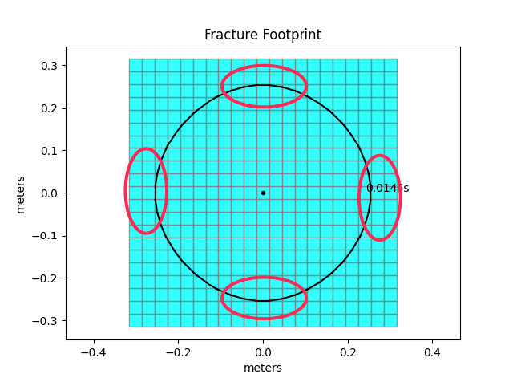 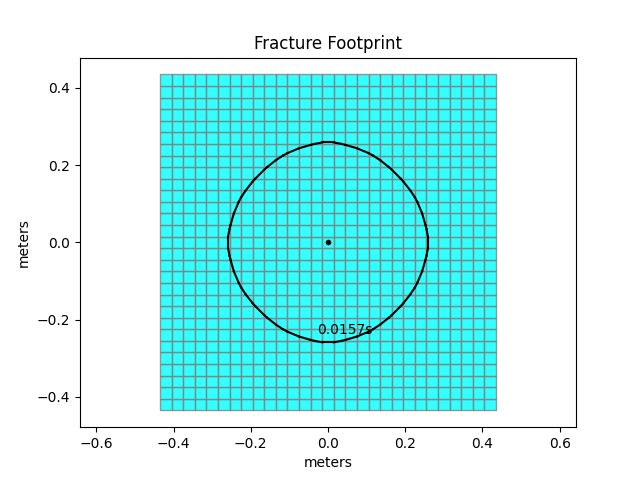{kind=link}
{kind=link}
The new dimensions of the mesh are: nx = 29, ny = 29, [xmin = -0.414, xmax = 0.414, ymin = -0.414, ymax = 0.414]. The simulation continues and after another extension reaches the point where the maximum number of cells inside the fracture footprint is reached (left figure).
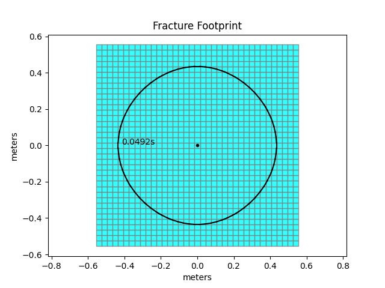 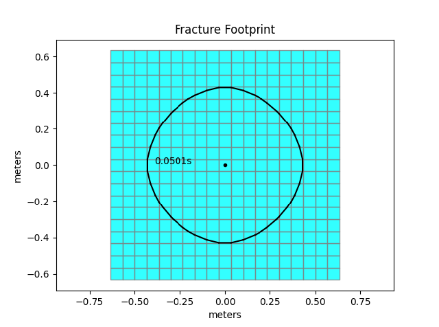{kind=link}
{kind=link}
We will now reduce the number of cells by the default factor of 2 in x and y. Before the reduction, the mesh has 37x37 elements in total and extents of [xmin = -0.53, xmax = 0.53, ymin = -0.53, ymax = 0.53]. There are some subtle tricks ensuring that the mesh reduction will work. We encapsulate the details but simply inform the user that we add elements on all sides as to ensure that we are not reaching a boundary during mesh reduction (new mesh does not immediately require re-meshing). The new number of elements after mesh reduction is 19x19 and the domain is slightly bigger [xmin = -0.62, xmax = 0.62, ymin = -0.62, ymax = 0.62]. The import point of this operation is that the total number of elements has reduced from 1’369 to 361. This represents a significant reduction in computational cost. In turn the precision in the process is reduced as well. We recommend mesh reduction only for situations where the number of elements is larger than in this example and where the reduction will still ensure sufficient precision.
Note that the interplay of extension and reduction will go on until the cell size becomes bigger or equal than 50[m]. From this point on, mesh reduction will be disabled and the number of cells will only increase for an ongoing simulation.
Running the regression tests¶
The regression test suite is a set of tests that are meant to check the proper behaviour of some internal functions. In order to run the tests, we need to make sure that the package pytest is installed in your machine. From the shell execute:
pip install -U pytest
To run the tests point the shell to the main directory of PyFrac (i.e.: the one containing the folder named “regression_tests”) and run:
pytest regression_tests/*
Running the benchmarks¶
The benchmarks test suite is meant to check the code accuracy against analytical solutions and against a set of reference numerical solutions obtained with PyFrac itself. In order to run the tests, we need to make sure that the package pytest is installed in your machine. From the shell execute:
pip install -U pytest
To run the tests point the shell to the main directory of PyFrac (i.e.: the one containing the folder named “regression_tests”) and run:
pytest benchmarks/test_simulations.py